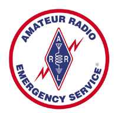

Dedicated to Creating Open Source
Software, Tools and Instructional Materials
For the Emergency Services Community, Amateur Radio,
Civilian Emergency Response Teams, and Others
Who Serve Our Communities in Times of Need
How We Got Started
The genesis of the Open ISES Project has it's start on April 1st of 2004 with an article that appeared on OSNews.com, titled "Will Open Source Come to the Rescue?" (Read the original article). The article discussed a serious lack of open source software for the emergency service community (police, fire and emergency medical services). This article was picked up by numerous other open source and emergency service web sites. It also led to folks e-mailing each other to debate the topics that were discussed in the article.
We believed then that open source will be readily accepted by emergency service agencies, most of which are staffed by volunteers and would directly benefit from open source software and materials. We also believed that the open source community would benefit as well. Many emergency service agencies, especially those in rural or economically deprived areas, would greatly benefit.
The positive impact of bringing high quality open source software to these areas would be enormous. Areas that were deprived of timely care due to a lack of funding for projects such as a CAD system would be deprived no longer. We believed that this would be an enormous boost for the volunteers of the open source community, who freely give of their time and talents to other volunteers who serve their local communities.
Based on the correspondence exchange, along with other conversations and information exchange, a decision was made to contact SourceForge and inquire as to the possibility of hosting a web site for the Open ISES Project. This allows all interested parties to come together and discuss the needs of the emergency service community and how developers can best help fill those needs. They came through and offered us the site you are now viewing.
That was several years ago, and we still hold to those initial beliefs and believe they were correct. On the occasion of our two year anniversary since the original article appeared on OSNews, a follow-up article was published, outlining how far we have come, and where we are headed.
 One welcomed group that displayed interest in our project that we were not expecting was from the volunteer amateur radio groups (such as The American Radio Relay League and the The Amateur Radio Emergency Service. These individuals have been very active and instrumental in the development and expansion of the Tickets project. For that we thank them.
Like any open source project, we are always looking for individuals to join our community. If you are a developer looking for a worthy project, we believe that there is none better than the Open ISES Project. If you are an emergency service provider, who is willing to work with software developers, to help meet the needs of your community or your fellow providers, we believe that the Open ISES Project is the place to be.